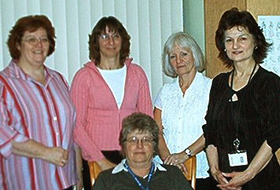

The BCC is a registered not for profit organization dedicated to the protection, promotion and support of breastfeeding and the implementation of the Baby-Friendly Initiative (BFI) in Canada.
The BCC was established in 1991, as a Health Canada initiative following the World Summit for Children, to establish breastfeeding as the cultural norm for infant feeding within Canada.
In 1998, the BCC confirmed its commitment to the Baby-Friendly Initiative (BFI) and expanded the initiative to include community health services, reflecting the continuum of care.
The BCC’s BFI standards provide evidence-informed best practice for all mothers and babies around infant feeding. As the national authority for the BFI, the BCC is committed to the protection, promotion and support of breastfeeding and informed decision-making regarding the use of non-human milk.
The BCC is the national authority for the BFI with the mandate of overseeing the implementation, assessment and monitoring of BFI in Canada and to ensure compliance with the BCC's BFI standards in BFI designated facilities.
The key areas of focus for the BCC to achieve this vision are to:
The BCC has many strategic partnerships including active membership with the international BFI Network for Industrialized countries, the International Breastfeeding Collaborative, and the Global Breastfeeding Collective, a strong liaison with the Public Health Agency of Canada and the Canadian Pediatric Society. The BCC is engaged with Accreditation Canada where we have positions on the technical committee. The BCC has a collaborative relationship with UNICEF Canada.

The Breastfeeding Committee for Canada (BCC) is a registered not for profit organization dedicated to the protection, promotion and support of breastfeeding as the normal method of infant feeding and the implementation of the Baby-Friendly Initiative (BFI) in Canada. The BCC is a volunteer organization that does not have any sustained public or private funding.
Membership is open to Canadians interested in voluntarily furthering the objectives of the BCC, who is not associated with a company whose products fall within the scope of The WHO International Code of Marketing of Breastmilk Substitutes (the Code), and subsequent, relevant World Health Assembly Resolutions, and whose application has been approved by the Board. BCC membership categories and fees are described in the BCC Bylaws.
The Provincial/Territorial Baby-Friendly Initiative (BFI) Implementation Committee (P/T committee) is one of two standing committees of the Breastfeeding Committee for Canada (BCC). Members, who represent all provinces and territories, as well as the Public Health Agency of Canada (PHAC), participate in activities that build capacity and foster dialogue and collaboration toward the continued implementation of the BFI in Canada.
The P/T committee provides a forum for ongoing dialogue, knowledge exchange and strategic collaboration across Canada through regular conference call meetings, email discussion, professional development opportunities and sharing of key resources. Some regions also meet regularly to discuss common priorities.
The BFI Assessment Committee supports the BFI process in provinces and territories, organizing assessments, mentoring assessor candidates and reviewing, revising and updating the assessment documents.
The primary role of the BFI Assessment Committee is overseeing the assessment of hospital and community health services in partnership with the Provincial/Territorial Committee, and developing and refining the standards and tools necessary for the assessment process. This committee liaises closely with the BCC P/T BFI Implementation Committee to build P/T BFI expertise and capacity nationally.